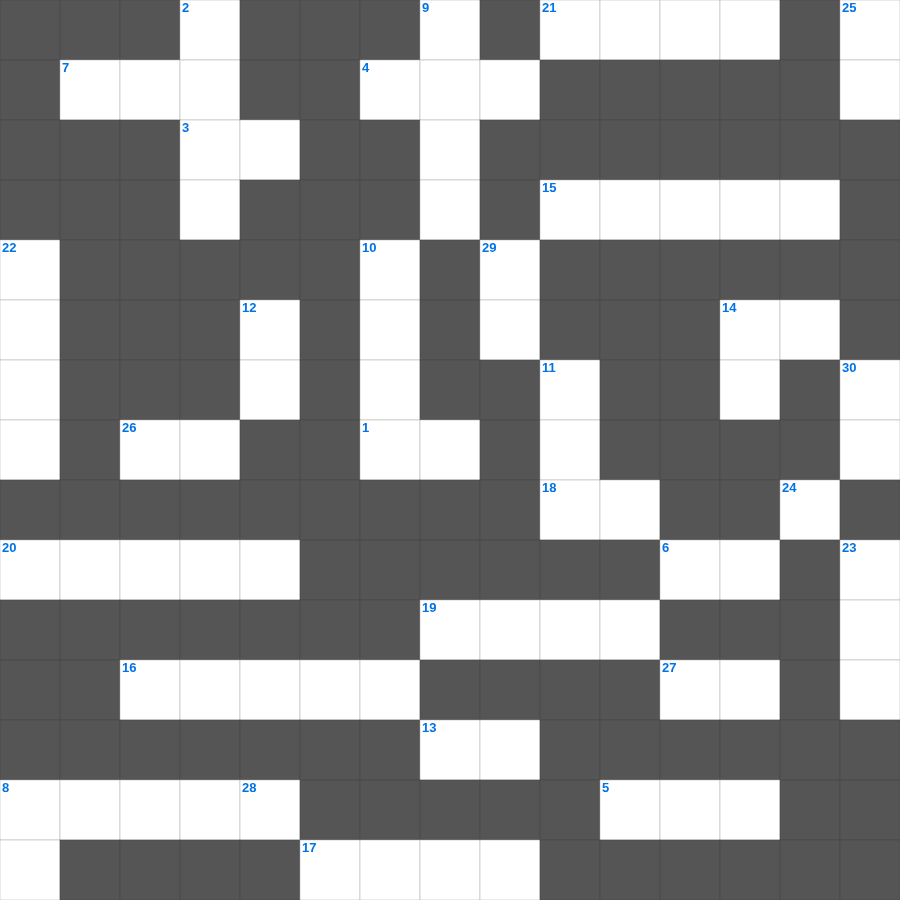

요엘: 여호와의 날
📌 서비스 정의
십자가로세로는 교회 주보와 주일학교에서 사용할 수 있는 성경 기반 가로세로 퍼즐 서비스입니다. 성경 인물, 사건, 핵심 구절을 바탕으로 제작되었습니다. 온라인 풀이 및 인쇄 기능을 제공합니다.
📖 요엘란?
요엘은 메뚜기 재앙을 배경으로 회개를 촉구하며, 성령이 부어지는 약속과 여호와의 날에 대한 예언을 전한 짧은 예언서입니다.
📚 요엘의 주요 사건·주제
메뚜기 재앙의 묘사 · 회개와 금식의 촉구 · 성령 강림 예언(요엘 2장) · 여호와의 날 예언 · 이스라엘의 회복 약속
요엘의 말씀을 퀴즈로 배우는 요엘 성경 퀴즈 문제입니다. 가로 힌트와 세로 힌트를 보고 35개의 단어를 맞춰보세요. 인쇄도 가능하고 정답 확인도 바로 되니 소그룹 모임이나 가정 예배 시간에도 활용하실 수 있습니다.

📝 가로 힌트
1. 영접하는 자 곧 그 이름을 믿는 자들에게는 하나님의 이것이 되는 권세를 주셨으니
3. 너희 죄를 서로 이것하며 병이 낫기를 위하여 서로 기도하라
4. 유월절에 문설주에 바른 것
5. 아론과 훌이 모세의 팔을 붙든 곳
6. 요셉이 보디발의 아내 유혹을 물리치고 간 곳
7. 베드로가 고기를 잡던 호수
8. 야곱이 형의 낯을 피해 도망가다 꿈을 꿈
13. 여호와 이것: 평강의 하나님
14. 의의 이것 신경(호심경)
15. 열 가지 재앙 중 마지막 재앙
16. 계시록의 일곱 교회 중 첫 번째 교회
17. 거짓 이것들이 일어나 많은 사람을 미혹함
18. 오래 참음, 자비, 이것
19. 노아의 방주가 머문 산
20. 떨기나무 불꽃 가운데서 모세가 들은 음성
21. 이스라엘의 수도이자 거룩한 성
24. 첫째 날 하나님이 만드신 것
26. 성막 입구의 방향
27. 십계명이 새겨진 것
📝 세로 힌트
2. 종려나무 성읍이라 불리는 가장 오래된 성
3. 예수님이 십자가에서 돌아가신 사건
4. 보라 세상 죄를 지고 가는 하나님의 어린 이것
8. 믿음 소망 사랑 중 제일은 이것
8. 성령의 9가지 열매 중 첫 번째
9. 솔로몬의 일천 번제
10. 지붕을 뚫고 내려온 병자
11. 보라 세상 죄를 지고 가는 하나님의 이것
12. 이스라엘이 430년 동안 거주한 나라
14. 예수님이 첫 기적(물로 포도주)을 베푸신 곳
22. 향유 옥합을 깨뜨려 발을 닦은 것
23. 니고데모와 예수님의 대화 주제
25. 영들 분별함과 각종 이것 말함
28. 하나님께 나아가는 자는 반드시 그가 계신 것과 또한 그가 자기를 찾는 자들에게 이것 주시는 이심을 믿어야 할지니라
29. 나의 이것을 너희에게 주노라
30. 죽음에서 다시 살아나심
🧩 이 퍼즐에서 배우는 내용
이 퍼즐은 요엘: 여호와의 날의 핵심 단어와 개념을 자연스럽게 복습할 수 있도록 구성되었습니다. 주일학교 수업이나 개인 성경공부에서 학습 내용을 점검하는 용도로 바로 활용할 수 있습니다.
🧑🏫 교회 교육 자료 활용
이 퍼즐은 주일학교 교재 추천 자료로 활용할 수 있고, 주일학교 주보에 넣기 좋은 분량으로 구성되어 있습니다. 수업용 주일학교 교안에 활동지로 붙이거나, 예배 후 복습용 주일학교 공과교재로 바로 사용할 수 있습니다.
🏷️ 키워드
요엘 성경 퀴즈 문제, 요엘, 십자가로세로, 성경퀴즈, 말씀퀴즈, 가로세로퍼즐, 주일학교 교재 추천, 주일학교 주보, 주일학교 교안, 주일학교 공과교재